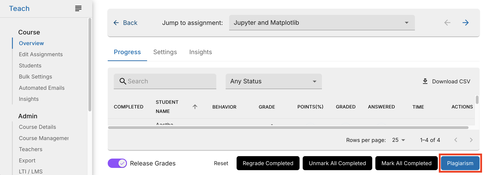
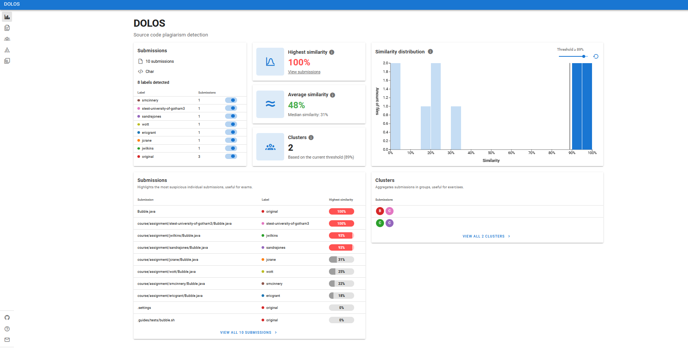
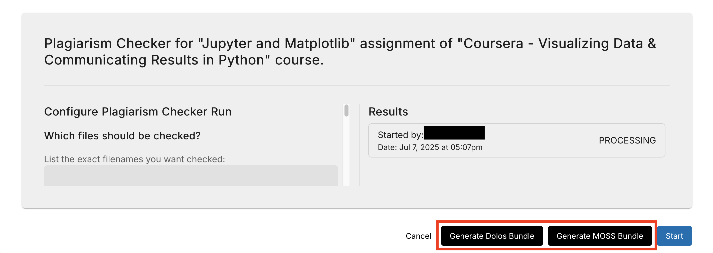

Plagiarism Checker¶
Plagiarism detection allows you to check for code copying and potential cases of cheating between members of a course. With the current version, Codio will compare the code projects of all students within a course for a specific teaching assignment.
If you want to include other reference code to include in the cross comparison, then you will need to create a dummy student account, add that dummy student to the course and upload the reference code as that student for that assignment. The Codio Test Student accounts could be used for this purpose
Plagiarism detection is best used with programming project assignments rather than Codio authored projects. It will work in both cases but it is really designed to test general coding projects rather than lots of auto-graded assessments within a assignment.
Codio does not determine whether cheating has or has not taken place and leaves the decision making up to you.
Courses¶
In order to use this feature you need to set up a course. If you are not using Codio as your main IDE and want to use only the plagiarism detection feature then you should still follow these instructions and ask your students to upload their code into the project using Git or by uploading files manually.
Access Plagiarism features¶
When in your course, select your assignment and then click the Plagiarism button.

Run¶
You can see the Plagiarism button in the lower right corner of the screen. When you press this you are taken to the plagiarism summary screen.
This screen will show you any plagiarism reports that were run in the past. You can open these if you wish.
On the left you can:
list the exact filenames you want checked. If there are multiple files, list one file per line.
enter a relative path in the workspace to check.
upload items to compare against (e.g. previous years information), you can also use moss bundles here.
filter out template code setting the maximum fingerprint percentage between 0 and 100%. For more information on fingerprinting see https://dolos.ugent.be/docs/running.html#ignoring-template-code
restrict the file types that should be checked. It is possible to add multiple file types by pressing the Add Extension button.
add the file list in the Files Excludes box that you don’t want to be inlcuded. If there are multiple files, add each file on a new line.
Note
Files Excludes is useful when there is a large data set and reporting on all returns an error.
These filters can be useful to avoid generating unnecessary noise in your report.
Once you are ready to run a new report, press the Start button, which will package up all the files and pass them to the detection engine. You are free to leave the screen at this point and return to it later to see whether the report has been generated.
Codio will include all code from all students in the report, irrespective of whether the assignment is marked by the student as completed.
The report¶
Once the report has been generated it can be opened by clicking the Open button. A typical report is shown below. The interpretation of the report is explained below.

From the report overview you can also then view by:
submission
clusters
graph
pair
In the Global Settings (under the cog icon at the top right) you can configure global parameters
Similarity Threshold (The similarity threshold is the minimum similarity a file pair must have to be considered plagiarised)
Anonymize Dataset (Anonymize the dataset by removing the names of the authors and the files)
Active Labels (Select the labels that should be displayed in the visualizations)
For more information see the Dolos documentation and if you have any feedback on the report, raise in the GitHub repository issues.
Note
if using the Online Version of Dolos where you upload the ZIP file you will need to specify the programming language as it can’t detect it from the .file extensions.
Note
If you can export with the correct language extension (eg username.py or username.java) based on the file extensions so autodetection works.
Note
Manifest.csv does not work with online version but you can rename the csv file so Dolos can pick it up.
Downloading Students Data for External Plagiarism Check¶
You can download the files of students and run plagarism on them outside the Codio with either Dolos or Moss. List the files you want to download in the ‘Which files should be checked’ field and press the relevant generate bundle button and it will download selected data/files for all students, this data contain student wise separate data/folders. This feature is helpful if you have large cohort of students or large assignments. If you want to run plagiarism outside of Codio with Dolos, check out Dolos.
If you wish to run with MOSS, they can handle directories and parsing out template code (they call it a base file and it’s controlled with -b flag). Put each student’s files into a directory that is their username and include a directory called Starter_code with the template code. See their documentation on usage and explanation of the flags, Here .

Note
You should always use -d and -b flags with moss for the format that codio provides.